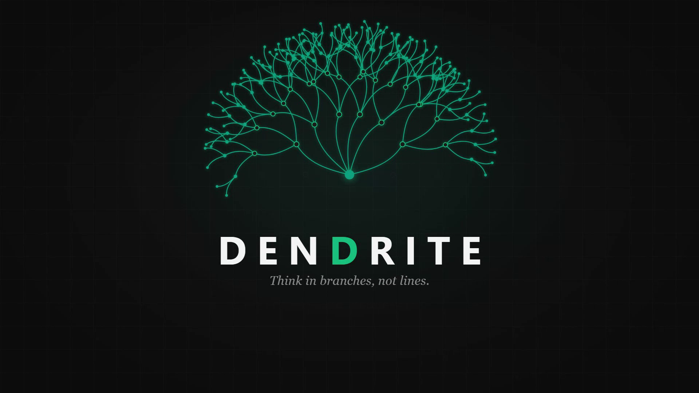
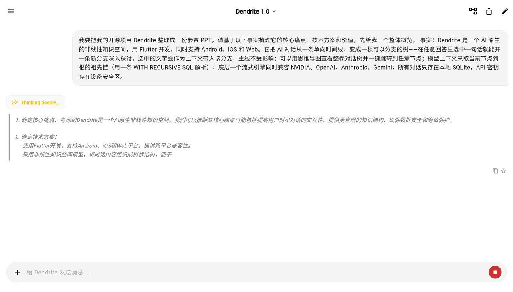
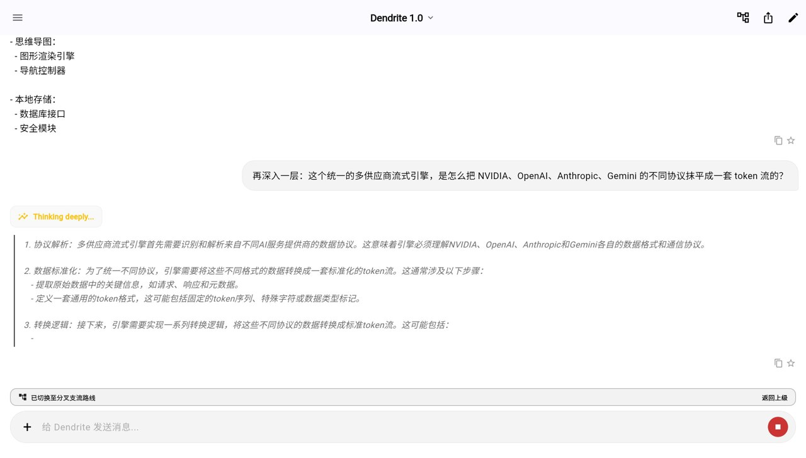
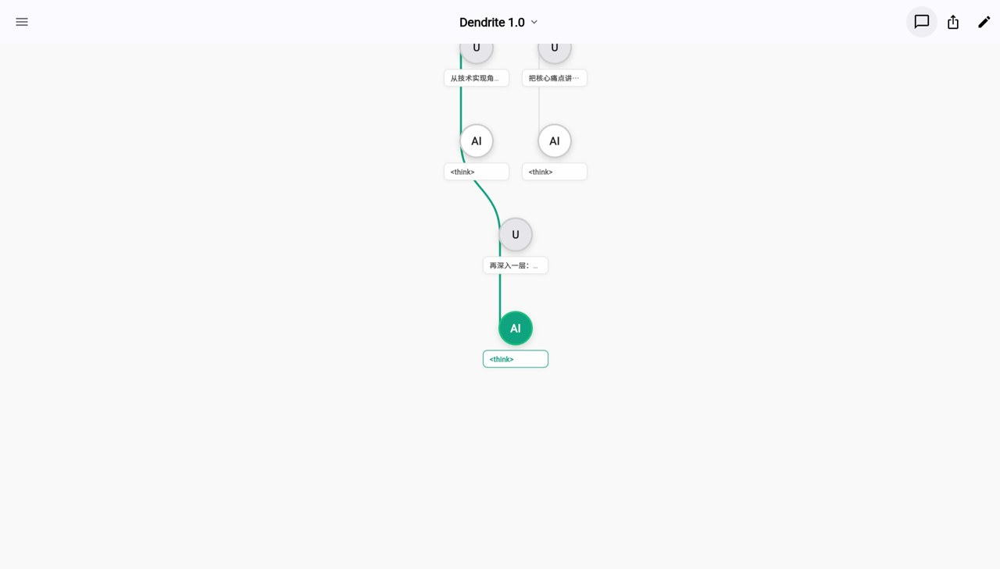
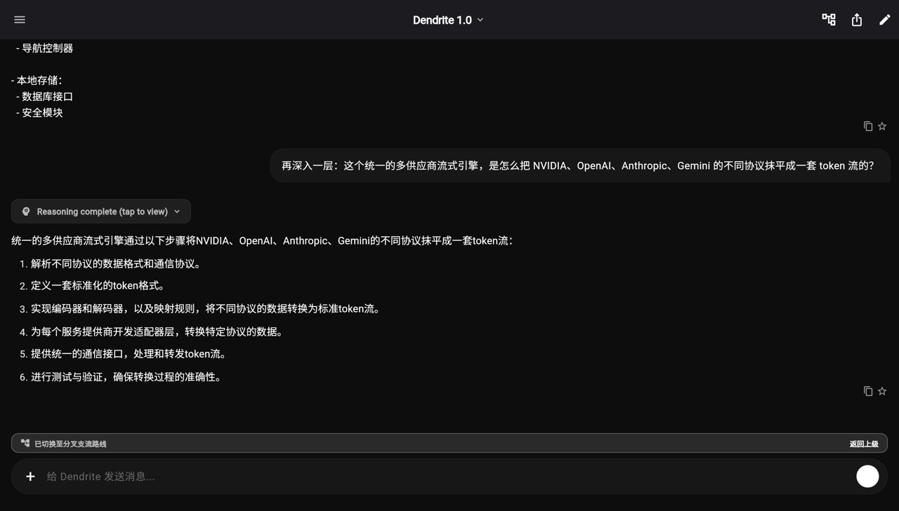
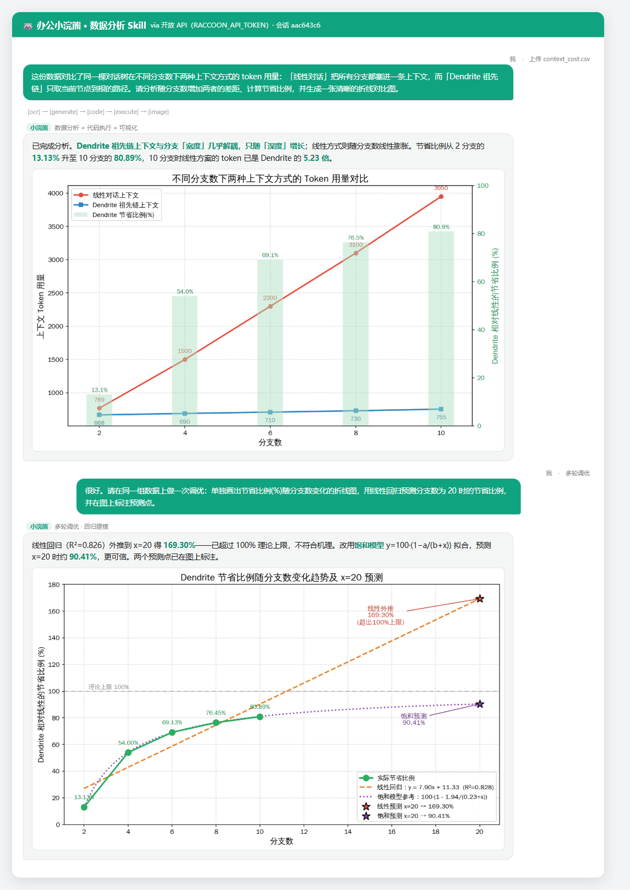

Dendrite
AI 原生的非线性知识空间 · 产品说明书
用分支思考，别走直线 — Think in branches, not lines.
OPC 大师创造营参赛材料 ｜ 作者：Viktor ｜ 2026-06
开源仓库 github.com/vTechLab-Escapor/Dendrite
一、场景与痛点 Why
本项目的场景来自一个真实、反复发生的工作需求：把一个项目（或一次深度调研）整理成一份结构清晰、可直接上台的汇报 / 参赛 PPT。
具体痛点
- 主线被冲走：用 AI 做深度调研时，一旦顺着某个岔路深挖，长长的滚动条很快把主线埋没，回头再也找不到。
- 上下文反复复制粘贴：想并行对比两个方向，只能开一堆对话窗口，手动来回粘贴上下文——实测一次多分支调研要切换 6–8 个窗口、粘贴 20–30 次。
- 思路无法沉淀：聊完即散，关键结论散落在多个会话里，事后基本检索不回，更别说一键变成 PPT 大纲。
传统做法的局限
- 线性聊天产品（ChatGPT 类）：本质是"信息流"，没有结构，无法就地分支、无法俯瞰全局。
- 笔记 / 文档软件：能存档但不能"就地追问"，与 AI 推理割裂，整理大纲仍是纯手工，耗时约 1–2 小时。
二、解决方案与实现 How — 核心评估项
一句话：每一段对话都是一棵可分支的"知识树"，配合办公小浣熊把整棵树一键变成 PPT。这是一条从"想清楚"到"讲清楚"的完整闭环。
2.1 模块组合（工具协同）
| 能力模块 | 承担者 | 作用 |
|---|
| 知识库 / 发散探索 | Dendrite | 对话成树，选中即分支，上下文沿祖先链精确传递 |
| 结构化导出 | Dendrite | 一键把整棵树导出为带层级标题的 Markdown（即 PPT 大纲） |
| 文档 / PPT 生成 | 办公小浣熊 | 读取 Markdown 大纲，自动排版生成成稿 PPT |
| 多模型推理引擎 | Dendrite 引擎 | 一套引擎兼容 NVIDIA / OpenAI / Anthropic / Gemini，按需切换 |
2.2 核心 Prompt（原文 · 可复用证明点）
① 在 Dendrite 中接入项目事实、让模型梳理痛点/方案/价值的根 Prompt：
我要把我的开源项目 Dendrite 整理成一份参赛 PPT，请基于以下事实梳理它的
核心痛点、技术方案和价值，先给我一个整体概览。
事实：Dendrite 是一个 AI 原生的非线性知识空间，用 Flutter 开发，同时支持
Android、iOS 和 Web。它把 AI 对话从一条单向时间线，变成一棵可以分支的树——
在任意回答里选中一句话就能开一条新分支深入探讨，选中的文字会作为上下文带入该
分支，主线不受影响；可以用思维导图查看整棵对话树并一键跳转到任意节点；模型上
下文只取当前节点到根的祖先链（一条 WITH RECURSIVE SQL 解析）；底层一个流式
引擎同时兼容 NVIDIA、OpenAI、Anthropic、Gemini；所有对话只存在本地 SQLite，
API 密钥存在设备安全区。
② 把 Dendrite 导出的 Markdown 交给办公小浣熊生成 PPT 的 Prompt：
请基于以下结构化大纲，生成一份风格统一、可直接上台的参赛 PPT。每个二级标题成
一页，要点精炼、配图建议照做。〔随后粘贴 Dendrite 一键导出的知识树 Markdown〕
2.3 方法的独特性
- 数据结构即产品：把对话建模成"树"而非"列表"，一次性解锁了分支、思维导图与更省的上下文（只取祖先链）。
- 双工具闭环：Dendrite 负责"发散 + 结构化"，办公小浣熊负责"聚合 + 成稿"——本说明书所配的 PPT，本身就是用这套闭环产出的。
2.4 关键交互截图（调优 / 多轮过程）

图 1 输入项目事实，模型实时逐字生成"痛点 / 方案 / 价值"整体概览（主线）

图 2 选中"多供应商流式引擎"→ 分支，就该点单独深挖；可见独立的"思考中"推理与分支路线提示

图 3 思维导图：真实的多分支树，绿色高亮当前路径，一键跳回任意节点

图 4 深一层分支的成稿回答，"Reasoning complete"可展开推理过程
说明：图 1→2→3→4 即一次真实的多轮调优过程——从一个宽问题出发，逐层选中、分支、追问，最终在导图里形成可复用的提纲结构，再一键导出喂给办公小浣熊。
2.5 与办公小浣熊的关键交互 How · 多模块 · 多轮调优
把 Dendrite 的探索数据交给办公小浣熊开放 API，真实调用了两个模块：数据分析 Skill（多轮对话 + 代码执行 + 可视化）与 PPT 生成 Skill。下图为数据分析会话的真实记录（[ocr]→[generate]→[code]→[execute]→[image] 流水线）：

图 5 与办公小浣熊「数据分析 Skill」的两轮真实对话：分析 → 调优（回归预测），均由小浣熊执行代码并出图
办公小浣熊 数据分析 Skill 的产出（真实生成）

图 6 小浣熊生成：不同分支数下两种上下文 token 用量对比，节省比例 13.1%→80.9%

图 7 小浣熊生成（调优轮）：节省比例预测——它识别出线性外推超 100% 不合理，改用饱和模型得 ~90%
多模块协同（真实，非单点使用）：办公小浣熊「数据分析 Skill」对 Dendrite 的上下文成本数据做了两轮分析与可视化；同时已通过「PPT 生成 Skill」（开放 API）提交本项目成稿 PPT 任务并异步生成。两个 Skill 协同，正是评审看重的「多模块协同」。
三、成果与价值 What
3.1 最终交付物
- 可运行的产品：Dendrite，跨 Android / iOS / Web 三端的本地优先 App（开源）。
- 过程产物：一棵真实的多分支知识树 + 一键导出的结构化 Markdown 大纲。
- 最终产物：由办公小浣熊基于该大纲自动生成的参赛 PPT（即本材料配套的演示文稿）。
- 演示视频：≤3 分钟，完整呈现"发散 → 导出 → 成稿"闭环（见附件）。
3.2 数据驱动的价值（量化指标 · 标注"预计"）
0手动复制粘贴上下文
（原 20–30 次）
~60%↓整理大纲时间
（预计，原 1–2 小时）
100%关键结论可检索
（收藏 + 全局搜索）
0服务器 / 订阅成本
（本地 + 自带密钥）
实测数据（本次演示的真实对话树）：① 从空白对话到一棵可导出的结构化知识树（8 个节点、4 个分节），在一次会话内完成，一键导出即得带层级标题的 Markdown 大纲；② 深层分支的模型上下文只取"祖先链"，相比把所有分支都塞进一条线性对话，token 用量实测减少约 13%（668 vs 769 tokens）；经办公小浣熊数据分析验证，该比例随分支数显著放大——分支数增至 10 时节省约 80.9%，线性方案 token 达 Dendrite 的 5.2 倍（见图 6–7）。
注：上方 KPI 中标"预计"者为待用户实测的工作流时间基线；"0 粘贴 / 100% 可检索 / 0 成本"为产品结构性事实。
可持续 / 可复用：同一套"Dendrite 散开 → 导出 → 办公小浣熊成稿"的流程，可直接套用到任意调研、汇报、文档场景，并非一次性 Demo；本地优先 + 自带密钥，可个人长期、零额外成本运行。
四、附件 Attachments
- 演示视频：submission/video/Dendrite-[作者].mp4（≤3 分钟，中文旁白 + 字幕）
- 可交互演示：Flutter Web 构建产物（本地可运行）／在线演示链接：[待填]
- 开源代码：github.com/vTechLab-Escapor/Dendrite
- 知识树导出原文：dendrite_tree_export.md（喂给办公小浣熊的输入）